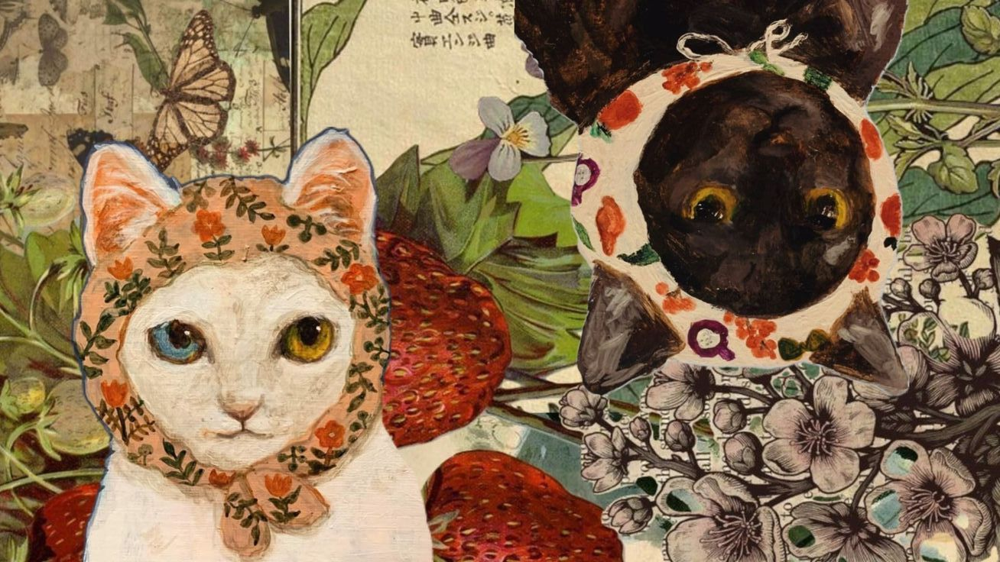

Welcome to Chaton
Cats are
Nuestros gatos
Los gatos son seres independientes que respetan su espacio y viven en el presente. Son más expresivos de lo que creemos; a través de sus bigotes, su cola, sus maullidos y su mirada, nos dicen mucho más de lo que imaginamos. Cuando aprendemos a observarlos, descubrimos un mundo sutil y profundo. Vivir con un gato es aprender a observar, a tener paciencia y a entender un lenguaje que no necesita palabras.
Mitos y verdades
Entre mitos y verdades, los gatos siguen siendo misterio… hasta que aprendes a mirarlos bien.
Mito 1
Los gatos son fríos. Verdad: Expresan cariño a su manera.
Mito 2
Ven en total oscuridad. Verdad: Necesitan algo de luz.
Mito 3
No toman agua. Verdad: Requieren hidratación diaria.
Mito 4
No necesitan atención. Verdad: Requieren vínculo y juego.
Mito 5
No conviven con perros. Verdad: Pueden adaptarse.
Mito 6
No son inteligentes. Verdad: Son muy observadores.
Mito 7
No sienten apego. Verdad: Forman lazos fuertes.
Mito 8
Siempre maúllan. Verdad: Se adaptan al entorno.
Mito 9
Comen cualquier cosa. Verdad: Necesitan dieta adecuada.
Mito 10
Odia el agua. Verdad: Algunos la toleran.
Personalidades según su color
Un gato no cambia su esencia para encajar contigo; tú aprendes a conocer la suya.
Negro
Tranquilo, protector y muy leal.
Blanco
Sensible, elegante y reservado.
Naranja
Juguetón, sociable y lleno de energía.
Gris
Independiente pero afectuoso.
Tricolor
Curiosa y con carácter fuerte.
Carey
Intensa, protectora y territorial.
Atigrado
Equilibrado y adaptable.
Bicolor
Afectuoso y estable.
Siamés
Vocal, inteligente y muy apegado.
Cuidados Básicos
- Alimentación balanceada según su edad
- Agua fresca disponible todo el día
- Limpieza diaria del arenero
- Vacunas y visitas veterinarias
- Tiempo de juego
Estrés o Ansiedad
Los gatos pueden ser muy sensibles al ambiente en el que crecen. ¿Cómo podemos saber si nuestro gato está estresado o tiene ansiedad?
Generalmente comienzan a maullar con más frecuencia, rondan por la casa sin descanso o se esconden. Algunos incluso dejan de usar su arenero.
Si notas alguna de estas señales, es importante ayudarlos a sentirse tranquilos, seguros y protegidos.
Rutina diaria
Nuestros gatitos necesitan todos los días agua fresca, alimento adecuado y limpieza constante del arenero.
También es recomendable dedicar al menos 15 minutos diarios al juego, revisar sus bigotes y observar algunas zonas de su cuerpo para asegurarnos de que todo esté en orden.
Si tus gatos salen a la calle con frecuencia, recuerda aplicar antiparasitarios y desparasitantes cada mes.
Protégelos y protégete.
¿Estoy listx para tener un gato?
Adoptar un gato es un compromiso a largo plazo. Reflexiona si cuentas con tiempo, estabilidad y recursos para ofrecerle un hogar seguro y amoroso.